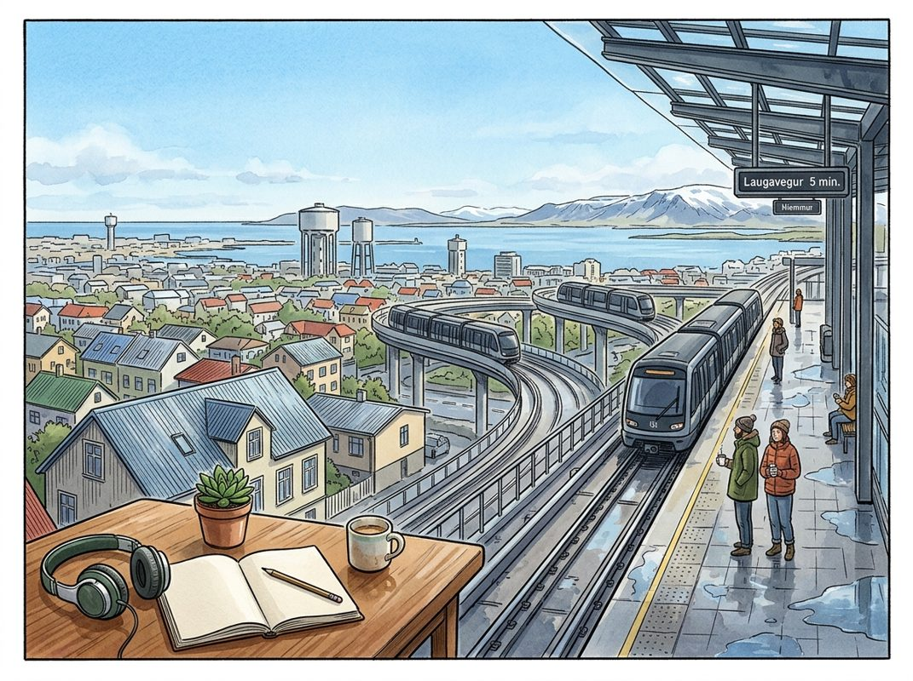

11/20

播客简报 2026-11-20
今日更新
Superintelligence Needs the Physical World with CEO and Co-Founder of Arda Bob McGrew
来源：No Priors
原链接：
状态：已读完整音频 transcript
本期节目深入探讨了AI超级智能的实现路径，强调其必须与物理世界深度融合，而非仅限于数字领域。Bob McGrew作为Arda的CEO，结合其在Palantir和OpenAI的经验，揭示了当前AI发展的瓶颈在于物理算力与实验，并介绍了Arda如何通过自动化制造工程来弥合这一数字与物理之间的鸿沟。这期节目适合所有关注AI未来发展方向、制造业创新以及企业级AI落地策略的读者。
- 超级智能的物理世界之锚：打破数字桎梏：Arda公司CEO兼联合创始人Bob McGrew，一位曾任Palantir早期高管和OpenAI首席研究官的资深人士，提出了一个核心观点：真正的超级智能（Superintelligence）无法脱离物理世界的变革而独立实现。他指出，尽管过去十年AI在数字领域取得了巨大飞跃，但我们身边的物理世界变化却微乎其微。例如，自动驾驶汽车（如Waymo）首次体验令人惊叹，但很快人们就会抱怨交通拥堵，因为车辆本身并未改变，仍受限于物理世界的交通规则和基础设施。McGrew认为，我们必须摆脱对数字世界的纯粹关注，将AI的能力延伸到原子层面，才能真正解锁超级智能的潜力。他强调，如果AI只能在数据中心里思考和交流，那么它的影响力将极其有限，无法真正改变世界，更遑论实现科幻作品中描绘的宏大愿景。
- 驳斥“硬起飞”：研究瓶颈在于物理算力而非人力：McGrew对自2018年以来流行的“自动化研究员工作将引发失控式加速（Hard Takeoff）”的递归自我改进（RSI）理论提出了质疑。他认为，这种观点是错误的，因为研究员并非AI发展的真正瓶颈。他解释说，研究工作的核心是运行实验，而实验的限制因素并非研究员的数量，而是物理算力，即GPU的可用性、部署方式及其互联网络。McGrew以其在OpenAI的经验为例，指出即使能将研究员的工作自动化99%，也只是将GPU的利用效率从35%提升到90%甚至更高。这固然是一次巨大的“一次性S曲线”式加速，类似于GPT-4O从无推理到有推理能力的飞跃，但它并不能启动无限的自我改进循环。一旦达到物理算力的优化极限，AI的发展仍将再次受限于物理世界的其他因素，需要寻找新的突破点。
- 智能廉价化与物理世界的稀缺：Arda的切入点：当AI实验室能够生产“廉价智能”时，其互补品——物理层面的资源就变得稀缺。McGrew指出，无论是生物学实验的湿实验室，还是AI研究的GPU集群，物理设施的有限性都会成为瓶颈。他以“O型环生产函数”理论为例，说明任何一项任务的完成都需要所有环节的协同，即使数字流程再快，如果物理环节受阻，整体效率也无法提升。例如，AI可以加速房屋设计，但建造房屋的真正难点在于获取许可和实际施工。即使在生物学等领域，通过强大的数字模拟（如蛋白质折叠）可以减少实验次数，但这只是一种“一次性加速”，最终仍会撞上物理实验的限制。因此，McGrew认为，OpenAI或Anthropic等前沿实验室在构建这些物理设施方面并不具备比较优势，这为专注于物理世界的初创公司提供了巨大的市场机会。Arda正是基于这一洞察，选择进入制造业领域。
- Arda的使命：通过自动化重塑美国制造业：Arda致力于解决美国制造业面临的根本性成本问题。McGrew指出，美国在产品设计方面表现卓越（如iPhone在加州设计），但大部分制造却在中国完成。他通过iPhone的例子说明了现有自动化技术的局限性：每年iPhone约有75%的零部件发生变化，而现有自动化设备是为特定任务定制的，无法灵活适应产品迭代。这意味着，只有25%的稳定零部件可以高度自动化生产，其余75%仍需人工组装。若要在美国实现成本竞争力，自动化率需从25%提升至90%，但这将带来巨大的资本支出，且每年都需要重新设计和重建自动化产线，经济上不可行。Arda的目标是让自动化产线的转换像人工产线工人培训一样容易，从而解决高混合、快速迭代产品的制造难题。其主要客户包括国防、消费电子和数据中心供应链等对创新速度和产品多样性有高要求的行业。
- 机器人与自动化：从鲁布·戈德堡到智能代理：在自动化产线的设计上，McGrew认为无需追求人形机器人，两臂一摄像头加上更好的感知能力足以替代大部分人工。他强调，现有机械臂的灵敏度已能满足大部分装配需求，真正的瓶颈在于每年为新产品重新设计和重建自动化设备的巨大成本。他将传统自动化比作“鲁布·戈德堡机械”：通过精确的夹具和确定性运动消除不确定性，实现无感知的机器人操作。然而，这种方式的设计和校准过程极其耗时。Arda的解决方案是引入AI，使其能够设计机器并简化校准过程。通过“代理式机器人”方法，AI可以利用感知能力处理微小偏差，并通过强化学习进行操作，从而自动化更复杂的工位。McGrew区分了“开放世界”（如卧室清洁）和“封闭世界”（如装配线）的机器人问题，认为装配线作为封闭世界，更适合通过AI实现高精度和高效率的自动化，达到99%甚至99.9%的成功率。
- Arda的务实路径：前沿部署工程与问题优先：Arda采取“问题优先”而非“技术优先”的策略，不自行训练大型模型，而是将前沿模型作为“协调器”，结合专用算法和工具来解决实际问题。McGrew以与国防制造商Anduril的合作为例，展示了Arda如何为制造工程师构建软件和AI平台，将虚拟构建时间从几天缩短到90分钟。Arda借鉴了Palantir的“前沿部署工程”（FDE）模式：将工程师嵌入客户现场，与客户共同解决具体问题，并将现场学习产品化。这种模式的关键在于找到“权力用户”（Power Users）和“愿景型赞助商”（Visionary Sponsors），通过小范围的成功逐步扩大影响力。McGrew强调，FDE并非简单的咨询服务，而是一种产品策略，它通过与客户的深度合作，不断将现场经验和需求融入产品，从而实现快速迭代和规模化推广，即使面对大型企业也能有效推动变革。
- 超级智能的终极愿景与费米悖论的独特解读：McGrew描绘了超级智能的终极愿景：AI将走出数据中心，成为人类在物理世界的“眼睛和手”，通过多样化的机器人形态（无人机、四足机器人、农用机械等，而非仅限于人形机器人）帮助人类完成各种任务。他认为，未来世界将充满各种感知和操作能力强的机器人，它们将由AI控制，实现“地球化改造”并最终探索星辰。McGrew还提出了对费米悖论（Fermi Paradox）的独特解读：如果存在其他先进文明，它们可能会以光速传播自我复制的探测器波。我们之所以尚未发现它们，是因为我们只会在其抵达前几分钟或几年内才能探测到。换言之，我们可能就是第一波，或者其他文明的波尚未抵达我们的光锥。这一观点将AI在物理世界的行动能力与宇宙探索的宏大叙事紧密结合，展现了超级智能的深远影响。
- 我应该记住什么：真正的超级智能需要物理世界的变革，而非仅限于数字领域，物理算力和实验是AI发展的核心瓶颈。；自动化研究员是“一次性S曲线”式的加速，而非无限自我改进的“硬起飞”，AI的价值在于作为“廉价智能”的补充，解决物理世界的稀缺性问题。；Arda通过自动化制造工程，旨在解决高混合、快速迭代产品的成本竞争力问题，重塑美国制造业，其目标客户是国防、消费电子和数据中心供应链等行业。；Arda采用“问题优先”策略，将前沿模型作为“协调器”，并借鉴Palantir的“前沿部署工程”（FDE）模式，通过与客户深度合作和产品化现场经验，实现企业级AI的快速落地。；未来机器人将以多样化形态普及，AI将成为人类在物理世界的延伸，实现“地球化改造”并探索星辰，甚至可能为费米悖论提供一种解释。
Friday Wrap-Up: AI in product development and the worlds largest IPO
来源：In Good Company with Nicolai Tangen
状态：已读完整音频 transcript
本期节目深入探讨了全球经济格局的快速变化，揭示了AI在产品开发中的颠覆性作用、中国工业能力的迅速崛起、欧洲工业面临的挑战，以及美国市场独特的乐观主义和吸引力，适合关注全球产业趋势、技术创新和投资策略的商业领袖及投资者。
- AI赋能产品开发与欧洲速度差距：Pirelli首席执行官Andrea Casaluki分享了AI如何革新传统制造业。作为F1赛车轮胎供应商，Pirelli利用“数字孪生”技术进行轮胎模拟测试，极大提升了效率。这种数字化转型是产品开发的新趋势。然而，在材料供应方面，欧洲与中国展现出显著的速度差异：欧洲供应商需数月才能提供附带保密协议的意见，而中国供应商则能迅速提供物理原型。这种速度差距导致一些美国公司因欧洲供应商速度不足或无法快速扩大生产规模，转而寻求其他地区合作。
- 中国工业能力的崛起与全球供应链重塑：节目指出，中国在多个工业领域展现出惊人的发展速度和扩张能力。例如，小米仅用三年时间就从手机制造商转型为汽车生产商，凸显了产品周期缩短的趋势。更值得关注的是，中国正进入此前未涉足的领域，如航空发动机，预计几年内将应用于中国制造的飞机。此外，中国在医药原料药供应链中的重要性日益增加，继稀土之后，对关键医药成分的控制力也逐步增强，这被视为“非常严重”的趋势，预示着全球竞争格局的深刻变化。
- 欧洲工业基础面临的挑战：面对全球快速变化的产业格局，欧洲的工业基础正经历严峻考验。节目中提到，企业在建设新工厂时，通常需要进行20到30年的长期规划，这在当前快速迭代的市场环境中显得尤为漫长和充满不确定性。梅赛德斯-奔驰宣布不再投资德国本土，大众汽车也在德国裁员。这些案例共同表明，欧洲的工业基础正面临显著挑战，其竞争力在一定程度上受到速度和适应性不足的制约，与中国和美国市场的活力形成鲜明对比。
- Antropic IPO：AI市场情绪的试金石：Antropic在纳斯达克敲响开市钟，完成了有史以来规模最大的IPO，对整个市场具有重要意义。此次上市被视为检验投资者对AI相关股票兴趣的“试金石”，尤其是在美国中期选举后，数据中心等AI相关领域的不确定性增加，以及英伟达CEO变动导致市场对AI板块信心有所动摇的背景下。Nicolai Tangen详细介绍了挪威主权财富基金在大型IPO前的内部运作流程：包括分析师对公司的深入研究、指数团队对持股需求的测算、股权资本市场团队与投行协调，以及风险部门的整体风险评估。这是一个涉及多部门协作的复杂过程。
- “全世界都在做多美国”：美股的吸引力：节目引用了Rushil Sharma在《金融时报》上的观点文章《全世界都在做多美国》，探讨了全球投资者对美国公司的强烈需求。Nicolai Tangen指出，美国股市的复合增长速度大约是欧洲的两倍，主要得益于其更强的盈利增长，尤其是在科技公司中表现突出。因此，即使是印度和亚洲的投资者，也越来越将目光投向美国股票。这种现象反映了美国市场在全球资本配置中的主导地位和独特吸引力，其创新能力和企业活力持续吸引着全球资金流入。
- 美国企业界的乐观主义与关注焦点：Nicolai Tangen分享了他在美国与大型企业高管会面后的深刻感受。与欧洲企业界普遍抱怨政治、经济环境不同，美国的企业家们展现出一种“抛开一切，勇往直前”的乐观主义和积极心态，这种解放性的精神让他深受鼓舞。会议中，AI是核心议题，对计算能力和数据中心的需求持续强劲，且似乎供不应求。企业普遍关注如何在更少的人力投入下实现更高产出，提升竞争力。此外，通胀压力持续、网络攻击（尤其在10月份显著增加）以及人才发展等也是讨论的重点。
- 领导力洞察与个人感悟：Nicolai Tangen介绍了他的新书《美国市场的领导力》，该书基于他与120位行业领袖的播客访谈，提炼了领导力建议，并融入了他自己的思考。这本书已在挪威、德国和英语国家发行。节目最后，两位主持人轻松聊起个人爱好。Pirelli的Andrea Casaluki和Nicolai Tangen都热爱帆船运动，Casaluki曾独自驾帆船横渡大西洋并梦想再次尝试，而Nicolai也曾完成大西洋航行，但他更倾向于探索其他地方，例如尼泊尔的徒步旅行。Nicolai还提到自己从不晕船。
- 我应该记住什么：AI（如数字孪生）正深刻改变传统制造业的产品开发模式，提升效率。；中国在工业生产速度和新领域（如航空发动机、医药原料）的扩张，正重塑全球供应链和竞争格局。；欧洲工业基础面临速度和投资挑战，与美国和中国的活力形成对比。；大型IPO（如Antropic）是市场情绪的重要风向标，反映了投资者对特定行业（如AI）的信心。；美国市场因其强劲的盈利增长和科技创新，持续吸引全球资本，展现出独特的乐观主义和韧性。
Gemini and the path to AGI with Koray Kavukcuoglu
来源：Google DeepMind: The Podcast
原链接：https://deepmind.com/podcast
状态：已读完整音频，转录部分
本期播客深入探讨了Google DeepMind在AGI道路上的战略思考与实践，特别是Gemini作为核心模型的演进哲学、产品驱动AGI的理念，以及在安全、对齐和效率等方面的挑战与应对，适合关注AI前沿技术、产品落地及伦理安全考量的研究者、开发者和决策者。
- DeepMind的范式转变：从专精到通用：Google DeepMind的Koray Kavukcuoglu回顾了公司从2019年专注于AlphaGo、AlphaStar、AlphaFold等特定领域AI项目的阶段，发展到如今以Gemini为核心的统一模型路径。他指出，过去团队分散在不同项目，而现在最大的变化是认识到单一模型技术具备巨大的泛化潜力，能够整合并交付广泛的成果。这种转变意味着，即使是像核聚变研究这类科学应用，也不再是单独解决一个问题，而是通过训练一个通用模型，使其能在该领域解决多种问题。这一战略调整使得DeepMind的规模迅速扩大，并朝着一个共同的、更宏大的目标迈进。
- 产品：通往AGI的基石与定义：Koray Kavukcuoglu坚信产品是实现通用人工智能（AGI）的关键路径。他认为AGI并非一个可以通过特定基准测试来定义的终极目标，而是一种通过产品在现实世界中被人们发现有用、值得信任并能与之协作的状态。产品开发提供了具体的“垫脚石”，帮助团队理解用户需求，探索AI的应用场景，并逐步解决实际问题。例如，从简单的聊天机器人到能处理日常工作和经济活动的工具，每一步都通过产品反馈来定义AI的经济价值和影响力。因此，他强调，脱离产品循环来构建AGI是不可能实现的，因为AI的有用性本身就是其智能定义的一部分。
- AGI的本质：持续的泛化与“去尖峰化”：Koray将AGI的实现视为一个持续的旅程，而非一蹴而就的阈值。他指出，AI模型在某些任务上表现出色，但在另一些任务上则表现不佳，这种性能上的“尖峰化”是当前模型的特点。AGI的进步在于通过不断提升模型的泛化能力，使其在各种任务上表现得越来越稳定和有用，从而逐步减少这种“尖峰化”。他认为，通过输入更多数据和增强模型能力来扩展规模，是实现这种泛化和智能的关键途径。当模型在未经优化的新任务上也能表现良好时，就体现了其真正的泛化能力，这正是大型语言模型（LLMs）令人惊叹之处。
- Gemini的演进哲学：动态架构与持续创新：Gemini并非一个静态的固定架构，而是对智能的持续追求。Koray强调，Gemini的每一代都是一个“定制化”的成果，由团队根据最新的研究进展和需求手工组装而成。这意味着Gemini的架构在不断演变，六个月前的版本与现在不同，未来五年也可能采用全新的架构。DeepMind通过建立一个“漏斗”机制，不断探索和研究新的架构和想法，将其融入到Gemini的迭代中。庞大的团队同时并行工作，一部分人专注于当前版本，另一些人则致力于下一代甚至下下一代，确保创新理念能够持续地融入到模型的开发中，形成至少一年以上的技术传承链条。
- 从概念理解到物理精确：AI的深度洞察之路：在探讨模型的理解能力时，Koray指出当前生成模型虽然能“想象”出粉色大象（视觉上正确），但距离真正理解物理、动力学、流体、气流或热传递等科学概念还很遥远。他认为，模型目前更多是视觉上的正确，而未来的目标是实现工程意义上的数值精确和物理正确。他坚信AI能够达到这一目标，因为它们是能够进行任何计算的机器，只要通过正确的数据、环境和训练方式，就能实现精确的数值计算，从而成为工程流程的一部分。这种深度的物理理解对于构建一个完整的世界表征至关重要。
- 对业界分歧的回应：开放架构与人类中心数据：Koray Kavukcuoglu对业界的一些分歧点表达了看法。对于Yann LeCun认为LLMs可能是“死胡同”的观点，Koray表示尊重，并承认未来可能会有不同的成功架构，这正是DeepMind“漏斗”式研究的意义。他认为当前LLMs架构是成功的，但不会固步自封。对于Richard Sutton“苦涩的教训”（Bitter Lesson）中关于脱离人类数据进行自我改进的观点，Koray持“是与否”的态度。他同意模型需要自我生成数据进行探索，但强调，如果目标是构建对人类有用的智能，那么锚定于人类数据至关重要，以确保模型理解人类的工作方式和需求，从而实现对齐。
- 递归式自我改进（RSI）：远未实现的愿景：Koray将递归式自我改进（RSI）定义为一个系统能够自我训练的完整循环，包括探索新数据、新架构、运行实验、验证成功并训练模型。他坦言，目前距离完全的RSI还有很长的路要走，并非外界想象的“一键生成Gemini 13”。DeepMind目前处于RSI的“局部区域”，即在某些环节可以依赖模型来完成工作，例如探索假设、构建和训练模型、分析结果。他强调，Gemini本身在构建下一代Gemini的过程中扮演着关键角色，但完整的RSI需要模型理解目标、数据、研究方法和算法改进等一系列复杂概念，这仍是前沿实验室的重点投资领域。
- 安全与对齐：从学术探索到工程实践：随着AI系统变得更加智能和具备代理能力，安全和对齐问题变得日益复杂。Koray指出，智能系统会找到完成任务的方法，因此关键在于构建正确的环境，不奖励作弊或捷径行为，并仔细监控训练过程。部署后，需要实时监控代理的行为、环境影响及其“思维链”（chain of thoughts），以确保其遵循用户意图。他强调，设计可监控的架构至关重要，模型的内部思考过程（如自然语言形式）应保持原始和未过滤，以便于人类和代理之间进行内省和研究。随着AI从游戏环境走向数字世界（如编码和工具使用），安全已从学术研究转变为严格的工程活动，需要像对待任何工程产品一样，确保其安全可靠地发布和使用。面对数十亿用户，对齐的挑战更大，但大规模反馈也提供了理解用户需求和调整模型的独特机会。对于“放慢研究”的呼吁，Koray认为，如果无法找到安全的下一步，自然应该放慢，但只要能确保技术安全可靠地发布，就没有理由停止或减速。
- 我应该记住什么：AGI的实现是一个通过产品在现实世界中逐步建立信任和有用性的过程，而非单一的基准测试或终极目标。；Gemini的开发哲学是动态且持续演进的，其架构并非固定不变，而是通过一个“漏斗”机制不断吸收新研究成果，每一代都是定制化的。；AI的泛化能力是其智能的关键体现，目标是减少模型性能的“尖峰化”，使其在各种任务上都能稳定发挥，而这需要通过大规模数据和能力扩展来实现。；虽然当前AI模型在概念上能进行想象，但要实现对物理、工程等领域的深度理解和数值精确性，仍需在训练方式和数据上进行重大突破。；安全与对齐已从学术研究转变为核心工程实践，需要通过构建安全环境、监控模型内部思维链、确保通信可观察性等多种手段，以应对智能系统日益增长的复杂性和代理能力。
Divine Discontent, AI Agents & the Future of Money | Brian Armstrong, Coinbase
来源：David-Senra
原链接：https://www.davidsenra.com/episode/brian-armstrong-2
状态：已读网页 transcript，摘要仅取前段
本期节目深入探讨了Coinbase创始人兼CEO Brian Armstrong如何通过自我编程、追求“神圣的不满”来驱动个人成长与企业创新，并详细阐述了AI智能体和“Coinbase大脑”如何彻底改变其工作方式及公司运营，同时展望了去中心化AI和智能体经济的未来。对于希望了解顶尖创业者思维模式、AI在企业中实际应用以及未来经济形态的中文读者，本期节目提供了丰富的细节和深刻的洞察。
- 自我编程：通过重复塑造行为与思维：Brian Armstrong分享了他通过“自我编程”来改变习惯和思维模式的经验。他认为，这并非玄学，而是通过不断重复某个目标或信念，使其始终处于意识前沿，从而在日常生活中更容易发现并抓住实现这些目标的机会。他将大脑比作神经网络，每次重复都像是在更新模型权重，强化神经通路。例如，他曾在20多岁时反复写下“我想创办一家价值十亿美元的科技公司”，最终在硅谷实现了这一目标。早期担任CEO时，他曾极度厌恶冲突，但通过反复默念“我热爱冲突”，他学会了将艰难对话视为推动目标实现的宝贵机会，甚至能将愤怒转化为积极的变革动力。这种方法让他能够更有效地处理公司内部的挑战，并从中学到如何利用情绪来驱动积极的改变。
- 神圣的不满：追求成就而非短暂快乐：Brian Armstrong和David Senra讨论了“神圣的不满”这一概念，即顶尖创业者对现状永不满足、持续追求卓越的心态。Brian承认自己对Coinbase产品始终抱有这种不满，总觉得“还不够好”，并以此作为动力，每天向数十人询问进展，制造紧迫感。他认为，这种不满并非负面情绪，而是推动进步的燃料。他强调，人生的目标不是短暂的“快乐”，而是长期的“成就感”（Fulfillment）。快乐是转瞬即逝的，而成就感则源于从事有意义的工作、建立有意义的关系、见证长期进步以及对文明进步做出贡献。他将人生比作一场视频游戏，挑战和困难是其乐趣所在，只有不断走出舒适区，才能获得深层次的成就感。
- 从《文明》游戏汲取商业战略智慧：Brian Armstrong透露，他从《文明》和《星际争霸》等视频游戏中汲取了许多商业建设的灵感。他将商业发展视为资源收集、产业建设和持续扩张的过程，这种“建造”的瘾让他无法停止。特别是《文明》游戏的“科技树”概念，对他影响深远。他甚至在办公室里挂着《文明》科技树的打印件，因为它展示了从农业、文字到AI、生物技术和金融市场等文明进步的路径。他希望自己也能为“科技树”添上一片新叶，推动文明进步。此外，《文明》游戏多元化的胜利方式（军事、科学、宗教、外交）也教会了他战略的灵活性。他举例说明，在游戏中，可以通过向其他大陆的弱小文明赠送科技，以牵制未来的强大对手，从而在当前战役中争取优势，这是一种多层次的战略思维。
- AI智能体：重塑Coinbase的工作模式：Brian Armstrong详细介绍了AI智能体如何改变他在Coinbase的工作方式。他现在拥有7到8个负责不同领域的“首席智能体”，以及一个统筹全局的“幕僚长智能体”。每个首席智能体又管理着多个“子智能体”，负责编写代码、测试、追溯审查并与团队成员协调。这些智能体不再仅仅是简单的问答工具，而是被赋予了责任和目标，能够主动分析数据、提出解决方案，并定期向Brian汇报重要决策。例如，智能体会分析用户注册数据，提出优化方案，Brian只需点击“同意”即可。他将这些智能体的能力评估为L5或L6级别的员工，并认为未来可以拥有几乎无限数量的这类高效员工。为了应对大量智能体产生的文本信息，Coinbase正在开发一种新的UI界面，采用优先级排序的收件箱模式，让Brian可以通过语音指令快速处理决策，大大提高了效率。
- Coinbase大脑与定制化AI模型的优势：除了通用AI模型，Coinbase还大力发展内部定制化AI。他们正在构建一个名为“Coinbase大脑”的内部系统，为每位员工、每个团队和每个代码库建立知识库。这个“大脑”会摄取所有内部信息，包括A/B测试结果、用户研究、事故报告、会议记录、代码审查和政策文件等，每晚进行消化、提炼和更新。当智能体在特定领域工作时，“大脑”会为其提供相关背景知识，从而生成更符合公司内部标准和偏好的输出。Brian指出，通过内部数据进行微调的开源模型，在特定任务（如合规报告）上甚至能超越前沿的通用模型，且成本更低、速度更快。人类员工的角色也随之转变，主要负责校准和培养AI，解决“大脑”中的矛盾，确保AI的输出与公司方向一致，从而大幅提高工作效率。
- 智能体经济的崛起与去中心化AI的愿景：Brian Armstrong对“智能体经济”的未来充满憧憬，他预测在未来十年内，全球99.999%的交易将发生在智能体之间，这将使经济规模远超现有的人类经济。他认为，加密货币和AI是“天作之合”，Coinbase的使命是利用这些前沿技术构建更好的金融服务，最终实现全球更大的经济自由。他强调，正如加密货币去中心化了金融系统，AI也必须去中心化。一个中心化的AI世界可能导致少数巨头拥有过多控制权并产生偏见，而去中心化的AI世界则意味着每个人都可以拥有和定制自己的小型开源模型，形成一个由各种专业智能体组成的、相互协作的市场，提供多样化的选择和更强的韧性。他认为，稳定币将成为智能体经济的实时支付轨道，而Coinbase的目标是成为最受信任的AI金融账户提供商。
- 削减第三方供应商：强化安全与内部控制：面对日益严峻的网络安全威胁，Brian Armstrong表示Coinbase正在积极削减第三方供应商的数量。他指出，网络安全事件（包括加密货币和传统金融领域）每年大约翻一番，而第三方供应商是公司面临的最大风险之一，因为公司对其控制力较弱。Coinbase已经投入大量资源加强安全，例如使用AI智能体审查每一行代码的漏洞，并将99%的加密资产离线存储。通过将更多功能在内部重建，Coinbase不仅能节省成本，还能更好地控制软件，降低安全风险。Brian认为，虽然网络安全挑战令人担忧，但这种“建造”的过程本身也充满乐趣和活力，让他感到非常兴奋和幸运，能够在这个生产力与创新爆发的黄金时代投身其中。
- AI工具的内部化与外部化考量：Brian Armstrong讨论了Coinbase内部AI工具（如优先级队列系统）是否应外部化的问题。他认为，将内部工具通用化并对外销售，其工作量可能是内部使用的10倍甚至50倍，需要处理不同公司的安全需求和计费偏好，难度巨大。他倾向于认为，许多编码辅助和AI工具最终会以开源形式存在，因此将其作为主要收入来源可能不具优势。然而，对于某些核心基础设施，如Coinbase Developer Platform，他们选择将其开放给外部开发者。该平台提供了连接区块链、安全托管和质押等加密基础设施，目前已有全球七大银行在其上构建稳定币钱包、支付和交易等服务，Brian对其前景非常看好，将其比作加密世界的AWS。这表明Coinbase在AI工具的外部化策略上，会根据具体产品的通用性、市场潜力和战略价值进行权衡。
- 我应该记住什么：通过反复书写或默念目标，可以像更新神经网络一样“自我编程”，将目标置于意识前沿，从而驱动行为改变和目标实现。；“神圣的不满”是顶尖创业者的核心驱动力，它并非负面情绪，而是对现状永不满足、追求卓越的燃料；人生的终极目标应是长期的“成就感”，而非短暂的“快乐”。；AI智能体正在彻底改变企业工作模式，它们能以L5/L6级别员工的效率执行任务，并通过“Coinbase大脑”等内部知识系统进行定制化训练，在特定任务上超越通用模型。；未来经济将是“智能体经济”，Brian Armstrong预测99.999%的交易将由智能体完成；AI应像加密货币一样去中心化，以确保自由、选择和韧性，稳定币将成为智能体经济的支付轨道。；面对日益增长的网络安全威胁，企业应积极削减第三方供应商，通过内部重建来增强对软件和数据的控制，从而提高安全性并降低风险。
Essentials: Nicotine's Effects on the Brain & Body & How to Quit Smoking or Vaping
来源：Huberman Lab
状态：已读音频详细听记
本期Huberman Lab Essentials节目深入剖析了尼古丁对大脑和身体的复杂影响，区分了尼古丁本身与其递送方式（如吸烟、电子烟）的危害，并提供了基于科学证据的戒烟戒瘾策略，适合所有关注尼古丁健康风险、寻求戒断方法或希望了解其神经生物学机制的听众。
- 尼古丁的本质与作用机制概述：Huberman Lab的Andrew Huberman教授在本期“Essentials”节目中，回顾并提炼了关于尼古丁的科学知识。尼古丁作为全球最普遍的消费物质之一，其影响深远。节目强调，理解尼古丁的关键在于区分其化学物质本身与具体的递送方式。人体内天然存在尼古丁受体（烟碱型乙酰胆碱受体），它们在正常大脑和身体功能中发挥作用。尼古丁通过与这些受体结合，影响大脑、身体、心理和生理表现。尼古丁存在于烟草及茄科植物中，但其吸收速度因递送方式而异：吸烟和电子烟因加热作用，尼古丁能迅速进入血液，电子烟甚至比吸烟更快，而口腔粘膜接触则最慢。这种吸收速度的差异，对尼古丁的成瘾性有着关键影响。
- 大脑中的神经化学交响曲：多巴胺、乙酰胆碱与去甲肾上腺素：尼古丁对大脑的影响主要通过激活三个关键神经化学通路实现。首先是中脑边缘奖赏通路（多巴胺奖赏通路），尼古丁促使腹侧被盖区（VTA）向伏隔核（Nucleus Accumbens）释放多巴胺，产生愉悦感和动机，这是其高度成瘾性的核心机制。其次是乙酰胆碱通路，尼古丁增加乙酰胆碱的释放，这种神经递质对学习、记忆和注意力至关重要，能暂时性地提升认知功能和警觉性，但效果通常在30-45分钟内消退。最后是去甲肾上腺素通路，尼古丁激活蓝斑核（Locus Coeruleus）释放去甲肾上腺素，从而提高警觉性、唤醒度和能量水平。这三种神经递质的协同作用，共同解释了尼古丁为何能提升情绪、改善注意力和增强警觉性。
- 尼古丁对身体的全面影响：从食欲到心血管：除了对大脑的直接影响，尼古丁还对身体产生多方面作用。它能作用于下丘脑的POMC神经元，通过结合α4β2亚型受体，抑制食欲并轻微提高新陈代谢率（约2%-5%的暂时性增长）。在心血管方面，尼古丁会迅速导致心率加快、血压升高，并增强心肌收缩力，激活交感神经系统，使身体进入“战斗或逃跑”模式。然而，它同时也会引起血管收缩，这可能对血液循环产生负面影响，甚至导致勃起功能障碍。尼古丁创造了一种矛盾的身体状态：精神高度警觉，但骨骼肌可能相对放松，这对于需要专注力的任务可能有利，但对需要快速反应的体育活动则不利。
- 长期健康风险：尼古丁与递送方式的致命区别：节目明确指出，尼古丁本身并非主要致癌物质，但其递送方式（如吸烟、电子烟、咀嚼烟草）带来巨大健康风险。一支香烟含4000至7000种有毒物质，焦油、甲醛等均为已知致癌物。尼古丁及其他烟草成分严重损害血管内皮细胞，是所有血管疾病根源。吸烟与多种癌症（肺癌、口腔癌、喉癌等）密切相关，咀嚼烟草和鼻吸烟草可使口腔癌和鼻咽癌风险增加高达50倍。长期吸烟平均缩短14年寿命，并增加心血管疾病及认知能力下降风险。对于大脑仍在发育的青少年，尼古丁危害尤甚，干扰大脑发育，影响学习、记忆和情绪调节，导致长期成瘾。
- 成瘾的深层机制与戒断的挑战：尼古丁的成瘾性极强，大部分吸烟者（约70%）都想戒烟，但发现极其困难。其核心机制在于尼古丁戒断时多巴胺水平的急剧下降，甚至低于基线水平，从而产生强烈的渴望（craving）、烦躁、恶心等戒断症状。电子烟的成瘾性甚至高于传统香烟，因为它能使尼古丁更快地进入血液，导致多巴胺在奖赏通路中释放的速度更快、曲线更陡峭，从而使其更具强化性、习惯性和成瘾性。这种快速的多巴胺提升机制，使得年轻人的大脑更容易被“重新编程”，期待快速、剧烈的愉悦感，导致对其他事物兴趣减退，并与抑郁水平升高密切相关。戒烟的成功率极低，仅有5%的人能完全戒断，且其中65%会在一年内复发。
- 戒烟戒瘾的科学策略：行为与药物干预：尽管戒烟困难重重，但科学研究提供了有效的戒断策略。行为干预方面，斯坦福大学精神病学副主任David Spiegel博士开发的临床催眠方法显示出惊人的效果，单次催眠戒烟成功率高达23%，远高于无辅助戒烟的5%。药物干预方面，安非他酮（Bupropion，商品名Wellbutrin）通过增加多巴胺和去甲肾上腺素的释放来帮助戒烟，成功率可达20%，但有增加癫痫发作的风险。伐尼克兰（Varenicline）通过作用于中脑边缘奖赏通路，维持多巴胺水平，减轻戒断症状。此外，尼古丁替代疗法（NRT），如尼古丁贴片、口香糖或鼻喷剂，通过非吸烟方式提供尼古丁，逐步降低剂量，也是有效的戒断手段。
- 成功戒断的关键：度过第一周与预防复发：戒烟过程中，第一周是关键中的关键。由于身体和大脑在尼古丁摄入期间会调整多巴胺基线，一旦停止摄入，多巴胺水平会跌至远低于正常，导致情绪低落和强烈不适。75%的复发发生在第一周内，因人们未预料到戒断后的感觉会比吸烟前更糟。因此，度过第一周至关重要。除了行为和药物干预，结合健康的辅助方法，如冷水澡、冰浴（能增加多巴胺）、运动和积极社交，可帮助抵消多巴胺下降。戒断后需警惕复发，特别是饮酒会显著增加复发概率。定期进行催眠或其他心理强化，巩固戒断成果，是长期维持无尼古丁状态的有效策略。
- 我应该记住什么：尼古丁本身并非致癌物，但其递送方式（吸烟、电子烟等）携带大量有害物质，是导致癌症和血管损伤的罪魁祸首。；尼古丁通过激活多巴胺、乙酰胆碱和去甲肾上腺素通路，产生愉悦、认知增强和警觉性提升，这也是其高度成瘾性的神经化学基础。；电子烟因尼古丁吸收速度更快，导致多巴胺释放更迅速，成瘾性甚至高于传统香烟，对青少年大脑发育危害尤甚。；戒烟戒瘾极具挑战性，但临床催眠、安非他酮、伐尼克兰和尼古丁替代疗法等科学方法能显著提高成功率。；戒断后的第一周是复发高风险期，需特别关注多巴胺水平下降带来的不适，并结合健康行为（如冷水刺激、运动）和持续支持来度过。
历史精选
Google Maps
来源：Acquired
状态：已读音频详细听记
本期节目深入剖析了Google Maps如何从一个不起眼的内部项目，通过一系列精准的战略收购和前瞻性的技术创新，最终成长为全球领先的地图服务，并深刻影响了移动互联网时代。它适合所有对产品开发、企业战略、技术演进以及科技巨头竞争史感兴趣的中文读者。
- Google Maps的萌芽：从内部困境到战略机遇：播客《Acquired》本集聚焦Google Maps的崛起，主持人Ben Gilbert和David Rosenbaum将其成功与Instagram相提并论，认为其影响力被低估。故事始于2003年，当时Google尚未上市。年轻的产品经理Brett Taylor负责的“Search by Location”功能效果不佳，促使Google高层，包括联合创始人Larry Page和新任业务发展副总裁Megan Smith，开始寻求地图领域的突破。彼时，AOL已斥资10亿美元收购MapQuest，Yahoo也有自己的地图产品，市场竞争激烈。Google意识到，要在这个快速发展的领域占据一席之地，必须采取更积极的策略。这为后续一系列关键收购埋下了伏笔，也预示着Google Maps并非一蹴而就，而是战略布局的产物。
- Where 2 Technologies：动态地图的先驱与AJAX的偶然发现：Google Maps的核心技术源于两位丹麦兄弟Lars和Jens Rasmussen在澳大利亚的创业。他们曾在美国硅谷工作，在互联网泡沫破裂后失业，决定在悉尼创业。Jens对当时静态、体验糟糕的地图服务（如MapQuest、Yahoo Maps）深感不满，构想了一个动态、可交互的地图产品。他认为地图本身应成为核心，可缩放、平移，并作为其他服务的平台。这种愿景依赖于“瓦片地图”技术。他们与工程师Nole Gordon和Stephen Ma组建了Where 2 Technologies。尽管最初设想是桌面软件，但在Yahoo推出本地商家列表后，他们意识到Web地图的潜力，并成功将产品移植到Web端。在此过程中，他们独立发现了AJAX技术（异步JavaScript和XML），这项技术允许网页在不刷新页面的情况下动态更新内容，成为Google Maps流畅体验的关键基石，也预示了Web 2.0时代的到来。
- 奠定基石：三项关键收购与人才布局：在Where 2 Technologies寻求融资时，曾获得红杉资本的青睐，但因Yahoo的竞争而告吹。然而，红杉的引荐使他们与Google的Larry Page和Megan Smith取得了联系。Google最终在2004年收购了Where 2 Technologies，将其技术和团队整合为Google Maps的核心。同年，Google还进行了另外两项关键收购：其一是硅谷初创公司Keyhole，其桌面软件“EarthViewer”后来演变为Google Earth，其CEO John Hanke也成为Google Geo Group的副总裁，并最终创立了Niantic Labs（开发《Pokémon GO》）。其二是小型公司ZipDash，以约200万美元收购，专注于通过Nextel手机收集实时交通数据，为未来的移动地图奠定基础。这些收购不仅带来了核心技术，更引入了Brett Taylor、John Hanke等关键人才，为Google Maps的长期发展注入了强大动力。
- 产品发布与早期突破：卫星图像的震撼效应：2005年2月，Google Maps正式发布。尽管发布初期流量巨大，但据Brett Taylor回忆，其表现只能算“还可以”，MapQuest和Yahoo Maps仍是市场主导。Google Maps团队随后进行了软件重写以提升速度，并引入了两项关键功能：一是卫星图像，利用Keyhole的技术，让用户能从高空俯瞰自己的家园，这项功能在当时极具新颖性，迅速吸引了大量用户。有趣的是，关于“卫星视图”的命名曾引发争议，Google Earth团队认为大部分图像来自航拍而非卫星，Sergey Brin甚至开玩笑提议命名为“Bird Mode”（鸟模式）。到2006年底，凭借这些创新，Google Maps成功超越MapQuest和Yahoo Maps，成为全球最大的互联网地图服务提供商，确立了其市场领导地位。
- API开放与数据主权：构建生态与“街景”的诞生：2006年中期，Google Maps发布了API（应用程序接口），这是一个里程碑式的举动，极大地推动了Web 2.0的发展。开发者可以免费将Google Maps嵌入自己的网页，并叠加自定义数据，催生了大量“Mashups”应用，如犯罪地图、房产搜索（PadMapper）等，为Trulia、Zillow、Uber等后来的创新应用奠定了基础。然而，Google Maps早期高度依赖外部地图数据提供商Tele Atlas和Navteq。2007年，这两家公司被诺基亚和TomTom收购，引发了Google对数据主权的担忧。为解决这一问题，Google收购了由DARPA挑战赛研究生团队创立的Vootool公司，其疯狂设想是驾驶装有摄像头的汽车拍摄街景。这项收购促成了Google Street View（街景）的诞生，并启动了“Ground Truth”项目，通过街景图像和插值技术构建自己的地图数据，最终在2009年10月摆脱了对外部数据提供商的依赖。街景也成为Google Maps强大的营销工具。
- 移动时代的地图战争：苹果的挑战与谷歌的回归：2007年iPhone发布时，Google Maps是其内置的两个第三方应用之一。然而，随着智能手机竞争加剧，苹果渴望完全掌控用户体验和底层数据。2012年WWDC大会上，苹果在iOS 6中推出了自家的地图应用，取代了Google Maps。这次发布被认为是苹果历史上的一次重大失误，初期苹果地图存在大量错误和不准确之处，导致用户体验极差，Tim Cook甚至为此公开道歉，并推荐了Waze等第三方应用。这凸显了开发成熟地图服务的巨大难度，以及Google Maps多年积累的数据和工程优势。苹果地图的失败，也为Google Maps的回归创造了机会。
- 谷歌地图的王者归来与Waze的整合：在苹果地图发布仅三个月后，2012年12月，Google Maps作为第三方应用重新登陆App Store。这款应用凭借其与Android版几乎一致的功能、流畅的矢量地图、创新的双指缩放手势以及卓越的用户体验，迅速获得了巨大成功，两天内安装量超过1000万次，被誉为“沙漠中的甘泉”。Google强大的技术基础使其能够快速响应市场需求，将成熟的地图服务带回iOS平台。随后，被Tim Cook推荐的Waze获得了巨大关注，最终Google在2013年6月以13亿美元的价格收购了Waze，进一步巩固了其在实时交通和社区驱动地图领域的领导地位。智能手机和免费导航的普及，也彻底颠覆了Garmin、TomTom等传统GPS导航设备市场。
- 我应该记住什么：Google Maps的成功并非偶然，而是通过对Where 2 Technologies、Keyhole和ZipDash等公司的战略性收购，整合了核心技术、人才和数据，奠定了其地图帝国的基石。；技术创新是产品突破的关键，Where 2 Technologies团队独立发现并应用AJAX技术，实现了动态交互式Web地图，成为Web 2.0时代的重要里程碑。；数据主权至关重要，Google通过收购Vootool并启动“Ground Truth”项目，利用街景图像构建自己的地图数据，摆脱了对外部地图数据提供商的依赖。；即使是科技巨头，在产品发布上也可能遭遇挫折（如苹果地图的初期失败），这凸显了地图服务开发的复杂性、数据积累的重要性以及用户体验的不可妥协性。；Google Maps通过开放API构建开发者生态，并最终在移动时代凭借其卓越的产品体验和战略性收购（如Waze），确立了其在地图和导航领域的领导地位，并颠覆了传统市场。
Padel: Causing a Racket - [Business Breakdowns, EP.127]
来源：Business Breakdowns
原链接：https://joincolossus.com/episodes/59855872/flatt-padel
状态：已读完整音频 transcript
Padel作为一项新兴的球拍运动，在全球范围内迅速崛起，尤其在欧洲和南美洲已形成规模。本期纪要深入探讨了Padel运动的独特魅力、其商业模式、投资机会、市场挑战及未来潜力，适合对体育产业、新兴消费趋势及另类资产投资感兴趣的读者。
- Padel运动概览与全球崛起：Padel运动起源于1969年墨西哥，由一位因场地不足而建造特殊球场的绅士发明。它融合了网球和壁球的元素，采用网球的计分和规则，但场地略小，四周设有玻璃墙，球可以反弹。Padel球拍实心带孔，球的压力低于网球，弹跳力较弱。这项运动在西班牙语国家流行多年，并在新冠疫情期间迎来爆发式增长，至今势头不减。目前，欧洲约有3.7万个Padel球场，过去几年年增长率达22%，并预计将持续。西班牙和瑞典是欧洲的主要市场，其中西班牙的Padel玩家数量已超过网球玩家，Padel已成为当地文化的一部分。根据德勤报告，全球Padel市场生态系统规模约为20亿美元。美国市场尚处于早期阶段，目前仅有约300个球场，但增长迅速，预计明年可能翻倍。
- Padel与Racket运动家族：独特魅力与对比：Padel常被拿来与Pickleball（匹克球）比较。匹克球在美国普及迅速，但Padel在运动强度和竞技性上更胜一筹。Padel的玻璃墙设计为比赛增添了独特的动态和刺激感，使得击球策略更加丰富，被认为更具“上瘾性”。Padel的魅力在于其“易学难精”的特点：发球采用下手方式，新手可以很快上手并享受比赛乐趣；但要精通利用玻璃墙进行击球则需要大量练习和技巧。这种特性使得不同水平的玩家也能同场竞技，增强了社交属性。与壁球相比，Padel的开放式场地和双打模式使其更具社交性，玩家可以与朋友互动，享受运动带来的乐趣，这正是其快速增长的关键因素之一。
- Padel俱乐部投资机会与商业模式：Alan Flatt作为EEP Capsule的CEO兼总裁，通过瑞典朋友的介绍进入Padel投资领域，主要关注Padel俱乐部，如纽约的Paddle House。他认为，俱乐部是目前进入Padel市场的最佳切入点，因为场地供应远低于需求。投资逻辑借鉴了瑞典等欧洲市场的成功经验：在合适的地理位置、面向目标人群、提供优质服务（如教练指导）的俱乐部能够迅速发展。Padel俱乐部的收入模式通常结合了按小时租赁和会员制，会员可享受折扣和优先预订权。与传统网球俱乐部不同，Padel俱乐部的收入主要来自场地租赁，而非教学课程。Alan Flatt预计，Padel俱乐部的平均利润率可达35%，投资回收期约为2-3年，这使其成为一个极具吸引力的投资标的。
- 场地建设与市场拓展的挑战：Padel俱乐部的建设成本相对适中，但并非低门槛。一个室外Padel俱乐部可能需要约100万美元的投资，而室内俱乐部则需约300万美元，高端设施甚至可达600-800万美元。理想的俱乐部通常拥有6到10个球场。在选址方面，关键是找到现有Padel社区、对新运动感兴趣的网球玩家，以及25-50岁、有可支配收入的城市活跃人群。美国市场面临场地供应不足的挑战，主要瓶颈在于土地使用审批和合适的工业仓库空间（通常需要至少24英尺的层高）。与瑞典等建设相对容易、市场快速增长但可能面临过度建设风险的国家不同，美国和德国等地的建设难度较大，导致市场发展较慢，但现有俱乐部的盈利能力更强。未来，市场将出现不同定位的俱乐部，从高端社交型到大众消费型，以满足不同需求。
- 职业联赛与媒体生态的构建：为了在美国推广Padel运动，职业Padel联赛（Pro Paddle League）应运而生，旨在利用美国人对团队运动的热爱。Alan Flatt投资了洛杉矶Beat队，该联赛首季有7支队伍，第二季已增至10支，包括纽约、休斯顿、奥兰多等城市，其中拉丁歌星Daddy Yankee收购了奥兰多队，为联赛带来了巨大关注。Padel被认为具有极佳的媒体观赏性，有望成为重要的媒体资产。联赛的收入支柱包括媒体版权、赞助和现场观众。许多国际品牌已看到Padel的潜力，并积极投入赞助。联赛首季已在CBS Sports和YouTube播出，未来的媒体合作仍在发展中。Padel运动对女性玩家具有强大吸引力，职业联赛也强调男女混合比赛，这增加了其观赏性和市场潜力。
- Padel运动的未来展望与潜在风险：Padel运动的持续增长需要解决场地供应问题，即在人们居住地附近建设更多便利的球场，以实现更广泛的普及。奥运会是提升Padel全球品牌认知度的重要里程碑，国际Padel联合会正积极推动其进入2032年布里斯班奥运会，尽管未能赶上2028年洛杉矶奥运会。潜在风险包括：房地产市场竞争激烈可能导致场地建设缓慢，从而影响市场扩张速度；未来市场成熟后，随着竞争加剧，可能出现价格压力和利润率压缩；以及创业公司在执行层面的挑战。Alan Flatt强调，Padel的社交属性是其区别于壁球等运动的关键优势，使其更具持久的吸引力。他认为，目前Padel仍处于增长曲线的早期阶段，风险可控。
- 投资与运营的经验教训：Alan Flatt结合其银行和房地产背景，分享了投资新兴行业的经验。他强调了严格的尽职调查流程，建议投资者制定一套明确的投资标准（例如10项运营标准），即使并非所有标准都能满足，也要确保大部分符合。他鼓励投资者和运营者在看到机会时大胆尝试，但同时也要保持灵活性和适应性，随时调整策略。在进入新市场时，不能完全照搬其他地区的成功模式，必须深入学习当地的市场特点、法律结构和消费者行为。通过与被投公司合作，共同理解市场，可以避免走弯路，并识别出真正有潜力的商业模式，同时规避那些看似吸引人但长期盈利能力存疑的机会。
- 我应该记住什么：Padel运动因其易学难精、强社交属性和玻璃墙玩法，在全球（尤其欧洲和南美）迅速崛起，疫情加速了其发展，市场规模已达20亿美元。；投资Padel俱乐部是当前主要机会，具有吸引力的利润率（约35%）和较短的回收期（2-3年），但美国市场面临场地建设挑战，需关注选址和房地产瓶颈。；职业联赛和媒体转播是Padel生态系统的重要组成部分，有望带来可观的媒体和赞助收入，其观赏性和对女性玩家的吸引力是增长亮点。；Padel的未来增长依赖于场地普及和便利性，奥运会入选（目标2032年）将是关键催化剂，但需警惕未来市场成熟后的价格竞争风险。；投资新兴市场需严格尽调，同时保持灵活性和适应性，学习当地市场特点，并注重运营执行能力，避免盲目复制。